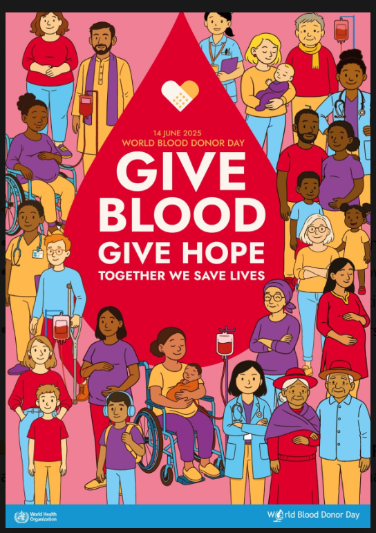

It’s quick
The transfer of pint of blood takes 8-10 mins but whole blood donation usually takes under an hour including a quick and free health check.
When you donate blood, you’re part of the lifeline that hospitals count on every day.
Donate Blood now Check Blood availabilityO- universal donor
B- very low
Check the live blood suply on the “Blood Supply” page.
The transfer of pint of blood takes 8-10 mins but whole blood donation usually takes under an hour including a quick and free health check.
One donation can support up to three patients through component separation.
Hospitals rely on volunteer donors to keep shelves stocked every day of the year.
